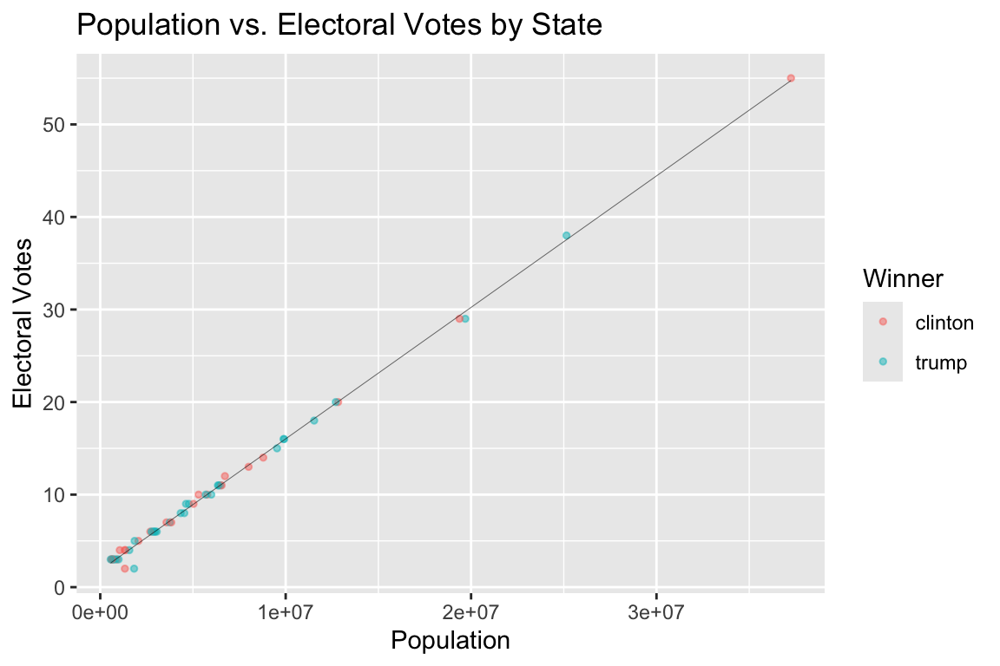
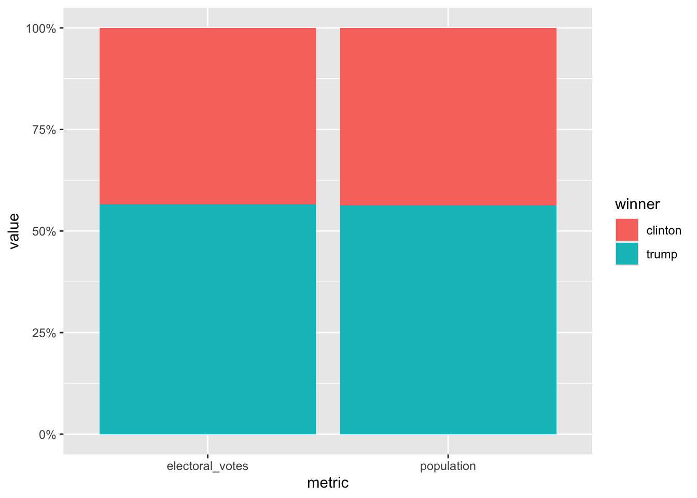

Assignment 7: Relational data plus revisiting data wrangling and visualization
Load packages
library(tidyverse)
── Attaching core tidyverse packages ──────────────────────── tidyverse 2.0.0 ──
✔ dplyr 1.1.4 ✔ readr 2.1.5
✔ forcats 1.0.0 ✔ stringr 1.5.2
✔ ggplot2 4.0.0 ✔ tibble 3.3.0
✔ lubridate 1.9.4 ✔ tidyr 1.3.1
✔ purrr 1.1.0
── Conflicts ────────────────────────────────────────── tidyverse_conflicts() ──
✖ dplyr::filter() masks stats::filter()
✖ dplyr::lag() masks stats::lag()
ℹ Use the conflicted package (<http://conflicted.r-lib.org/>) to force all conflicts to become errors
library(knitr)library(dslabs)
Excercise: 2016 election result and polling
For this exercise, we will explore the result of the 2016 US presidential election as well as the polling data. We will use the following three datasets in the dslabs package, and use join function to connect them together. As a reminder, you can use ? to learn more about these datasets.
results_us_election_2016: Election results (popular vote) and electoral college votes from the 2016 presidential election.
polls_us_election_2016: Poll results from the 2016 presidential elections.
murders: Gun murder data from FBI reports. It also contains the population of each state.
We will also use this dataset to get the exact numbers of votes for question 3.
Question 1. What is the relationship between the population size and the number of electoral votes each state has?
1a. Use a join function to combine the murders dataset, which contains information on population size, and the results_us_election_2016 dataset, which contains information on the number of electoral votes. Name this new dataset q_1a, and show its first 6 rows.
q_1a <- murders %>%left_join(results_us_election_2016, by ="state")knitr::kable(head(q_1a))
state
abb
region
population
total
electoral_votes
clinton
trump
johnson
stein
mcmullin
others
Alabama
AL
South
4779736
135
9
34.35795
62.08309
2.094169
0.4422682
0.0000000
1.0225246
Alaska
AK
West
710231
19
3
36.55087
51.28151
5.877128
1.8000176
0.0000000
4.4904710
Arizona
AZ
West
6392017
232
11
44.58042
48.08314
4.082188
1.3185997
0.6699155
1.2657329
Arkansas
AR
South
2915918
93
6
33.65190
60.57191
2.648769
0.8378174
1.1653206
1.1242832
California
CA
West
37253956
1257
55
61.72640
31.61711
3.374092
1.9649200
0.2792070
1.0382753
Colorado
CO
West
5029196
65
9
48.15651
43.25098
5.183748
1.3825031
1.0400874
0.9861714
1b. Add a new variable in the q_1a dataset to indicate which candidate won in each state, and remove the columns abb, region, and total. Name this new dataset q_1b, and show its first 6 rows.
1c. Using the q_1b dataset, plot the relationship between population size and number of electoral votes. Use color to indicate who won the state. Fit a straight line to the data, set its color to black, size to 0.1, and turn off its confidence interval.
ggplot(q_1b, aes(x = population, y = electoral_votes, color = winner)) +geom_point(size =1, alpha =0.5) +geom_smooth(method ="lm", se =FALSE, color ="black", linewidth =0.1) +labs(title ="Population vs. Electoral Votes by State",x ="Population",y ="Electoral Votes",color ="Winner" ) +theme_gray()
`geom_smooth()` using formula = 'y ~ x'

Question 2. Would the election result be any different if the number of electoral votes is exactly proportional to a state’s population size?
2a. First, convert the q_1b dataset to longer format such that the population and electoral_votes columns are turned into rows as shown below. Name this new dataset q_2a, and show its first 6 rows.
2b. Then, sum up the number of electoral votes and population size across all states for each candidate. Name this new dataset q_2b, and print it as shown below.
2c. Use the q_2b dataset to contruct a bar plot to show the final electoral vote share under the scenarios of 1) each state has the number of electoral votes that it currently has, and 2) each state has the number of electoral votes that is exactly proportional to its population size. Here, assume that for each state, the winner will take all its electoral votes
Note: only two Oceanian countries are included in this dataset, and geom_smooth() does not work with two data points, which is why they are excluded.
Hint: geom_col(position = "fill") might be helpful.
q_2c <- q_2b %>%group_by(metric) %>%mutate(share = value /sum(value))ggplot(q_2c, aes(x = metric, y = share, fill = winner)) +geom_col(position ="fill") +scale_y_continuous(labels = scales::percent) +labs(x ="metric",y ="value",fill ="winner" ) +theme_gray()

Question 3. What if the election was determined by popular votes?
3a. First, from this dataset on GitHub, calculate the number of popular votes each candidate received as shown below. Name this new dataset q_3a, and print it.
*Note: Vote counts are listed for several other candidates. Please combine the votes for all candidates other than Clinton and Trump into a single others category (as shown in the table below)
Hint: pivot_longer() may be useful in here.*
data <-read_csv("https://raw.githubusercontent.com/kshaffer/election2016/master/2016ElectionResultsByState.csv")
Rows: 51 Columns: 11
── Column specification ────────────────────────────────────────────────────────
Delimiter: ","
chr (2): state, postal
dbl (9): clintonVotes, clintonElectors, trumpVotes, trumpElectors, johnsonVo...
ℹ Use `spec()` to retrieve the full column specification for this data.
ℹ Specify the column types or set `show_col_types = FALSE` to quiet this message.
3c. Lastly, use the q_3b dataset to contruct a bar plot to show the final vote share under the scenarios of 1) each state has the number of electoral votes that it currently has, 2) each state has the number of electoral votes that is exactly proportional to its population size, and 3) the election result is determined by the popular vote.
Question 4. The election result in 2016 came as a huge surprise to many people, especially given that most polls predicted Clinton would win before the election. Where did the polls get wrong?
4a. The polling data is stored in the data frame polls_us_election_2016. For the sake of simplicity, we will only look at the data from a single poll for each state. Subset the polling data to include only the results from the pollster Ipsos. Exclude national polls, and for each state, select the polling result with the enddate closest to the election day (i.e. those with the lastest end date). Keep only the columns state, adjpoll_clinton, and adjpoll_trump. Save this new dataset as q_4a, and show its first 6 rows.
*Note: You should have 47 rows in q_4a because only 47 states were polled at least once by Ipsos. You don’t need to worry about the 3 missing states and DC.
Hint: group_by() and slice_max() can be useful for this question. Check out the help file for slice_max() for more info.*
q_4a <- polls_us_election_2016 %>%filter(pollster =="Ipsos", state !="U.S.") %>%group_by(state) %>%slice_max(order_by = enddate, n =1) %>%ungroup() %>%select(state, adjpoll_clinton, adjpoll_trump) knitr::kable(head(q_4a))
state
adjpoll_clinton
adjpoll_trump
Alabama
37.54023
53.69718
Arizona
41.35774
46.17779
Arkansas
37.15339
53.28384
California
58.33806
31.00473
Colorado
46.00764
40.73571
Connecticut
48.81810
38.87069
4b. Combine the q_4a dataset with the q_1b dataset with a join function. The resulting dataset should only have 47 rows. Create the following new variables in this joined dataset.
polling_margin: difference between adjpoll_clinton and adjpoll_trumpactual_margin: difference between clinton and trumppolling_error: difference between polling_margin and actual_marginpredicted_winner: predicted winner based on adjpoll_clinton and adjpoll_trumpresult = ifelse(winner == predicted_winner, "correct prediction", str_c("unexpected ", winner, " win")) Keep only the columns state, polling_error, result, electoral_votes. Name the new dataset q_4b and show its first 6 rows.
4c. Generate the following plot with the q_4b dataset. Use chunk options to adjust the dimensions of the plot to make it longer than the default dimension. Based on this plot, where did the polls get wrong in the 2016 election?